Para que o organismo se mantenha vivo e funcionalmente é necessário que ele receba suprimento constante de material nutritivo.
A maioria dos alimentos ingeridos pelo animal precisam ser tornados solúveis e sofrer modificações químicas para que sejam absorvidos e assimilados, nisto consistindo a digestão.
Os órgãos que, no conjunto, compreendem o sistema digestório são especialmente adaptados para que estas exigências sejam cumpridas.
Assim, suas funções são as de:
Preensão;
Mastigação;
Deglutição;
Digestão;
Absorção dos alimentos;
E a expulsão dos resíduos, eliminados sob forma de fezes.
Divisão do sistema digestório
Reconhecemos no sistema digestório um canal alimentar e órgãos anexos.
Do canal fazem parte órgãos situados na cabeça, pescoço, tórax, abdome e pelve.
O canal alimentar inicia-se na cavidade bucal;
Continuando pela faringe;
Esôfago;
Estômago;
Intestinos (delgado e grosso);
Terminando no reto, que se abre no meio externo através do ânus.
O canal alimentar, portanto, é aberto nas suas duas extremidades (boca e ânus) o que faz sua luz pela qual transita o alimento, ser parte do meio externo.
Entre os anexos incluem-se as glândulas salivares, o fígado e o pâncreas.
Boca
A cavidade bucal é dividida em duas porções:
A) Vestíbulo da boca;
B) Cavidade bucal propriamente dita
A primeira porção é um espaço limitado por um lado pelos lábios e bochechas e por outro lado pelas gengivas e dentes, constituindo o restante a cavidade bucal propriamente dita.
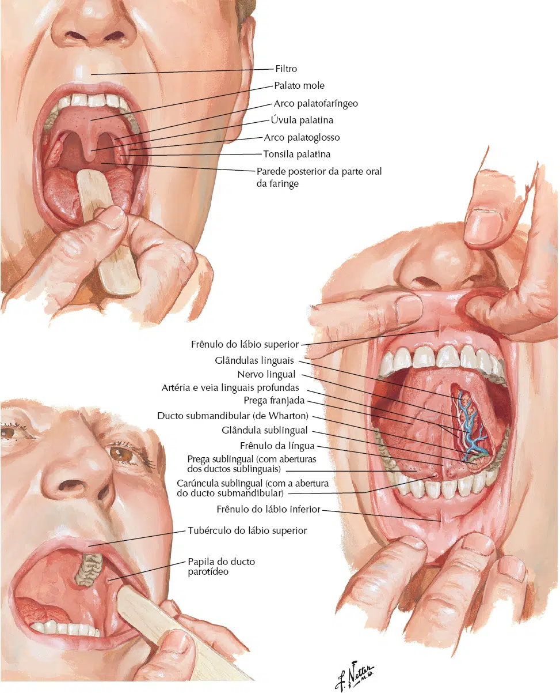
Palato
O teto da cavidade bucal está constituído pelo palato e neste reconhecemos o palato duro, anterior, ósseo, e o palato mole, posterior, muscular.
O palato separa a cavidade nasal da cavidade bucal.
Do palato mole, no plano mediano, projeta-se uma saliência cônica, a úvula e, lateralmente, duas pregas denominadas arco palatoglosso (a mais anterior) e o arco palatofaríngeo (a mais posterior), produzidas por músculos que recebem os mesmos nomes dos arcos.
Podemos agora definir os limites do istmo das fauces que comunica a cavidade bucal com a parte da faringe:
Superiormente, está limitado pela úvula; lateralmente, pelo arco palatoglosso e, inferiormente, pelo dorso da língua.
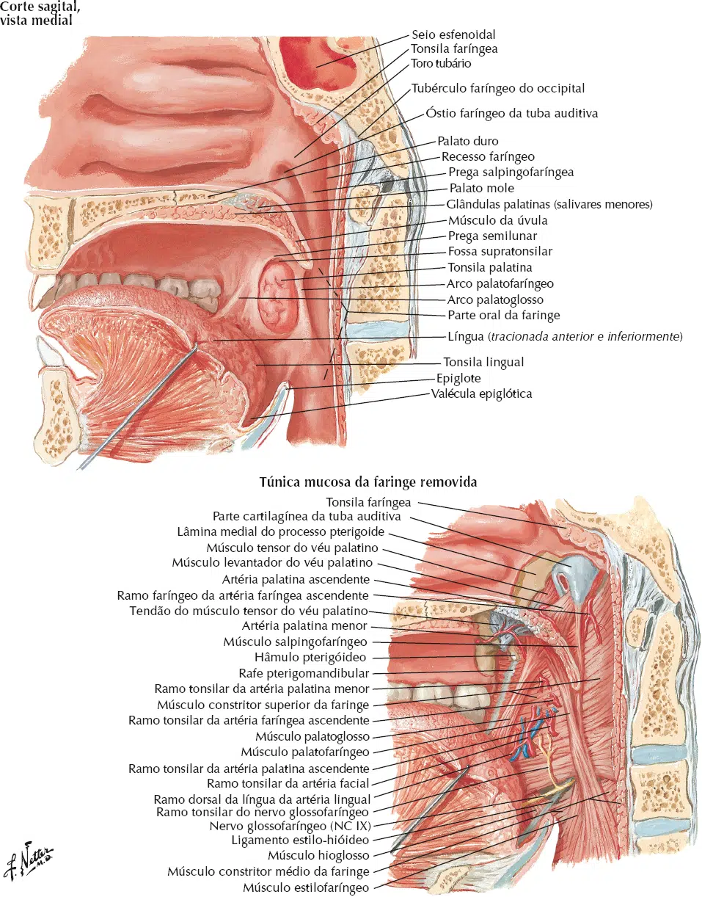
Língua
É um órgão muscular revestido por mucosa e que exerce importantes funções na mastigação, como órgão gustativo e na articulação de palavras.
Sua face superior é denominada dorso da língua.
Neste, na junção dos dois terços anteriores com o terço posterior, nota-se o sulco terminal que divide a língua em duas porções: corpo, anterior, e raiz, posterior a ele.
A observação da mucosa que reveste o dorso da língua permite identificar uma série de projeções, as papilas linguais, que são de vários tipos; as maiores, facilmente identificáveis, dispõem-se comumente em V, logo adiante do sulco terminal, e são denominadas papilas valadas.
Nestas, como em outras do tipo diferente, localizam-se receptores gustativos.
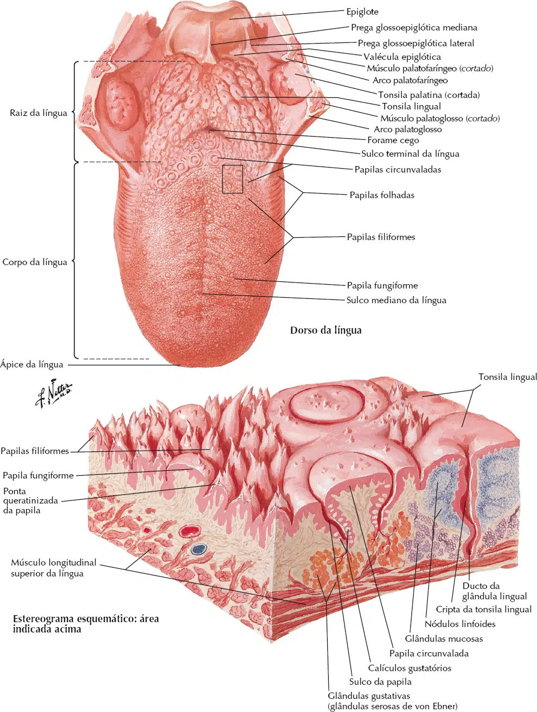
Dentes
São estruturas rijas, esbranquiçadas, implantadas em cavidades da maxila e da mandíbula, denominadas alvéolos dentários.
Em cada dente distinguem-se três partes:
Raiz, implantada no alvéolo,
Colo, circundado pela gengiva;
Coroa, livre, e entre elas uma zona estreitada.
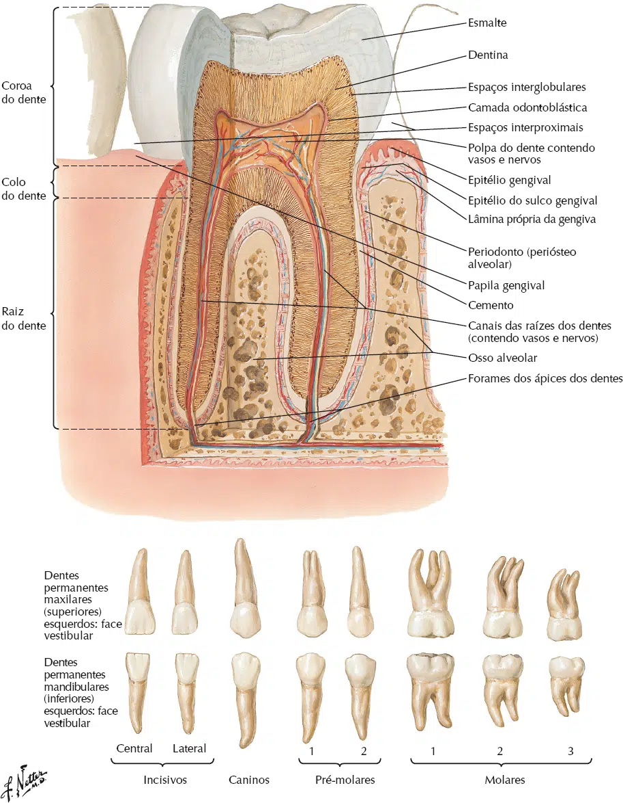
No homem adulto, há 32 dentes, sendo:
8 incisivos;
4 caninos;
8 pré-molares;
e 12 molares.
No homem há duas dentições:
A primeira é denominada primária (“de leite”), com 20 dentes que começam a aparecer a partir dos 6 meses de idade:
8 incisivos, 4 caninos e 8 molares.
A segunda denominada permanente, apresenta-se com 32 dentes como vimos.
A substituição começa a partir de 6 ou 7 anos de idade podendo estender-se, com variações até 25 anos de idade.
É curioso observar que os mamíferos são os únicos que apresentam, no mesmo animal, dentes de características morfológicas diferentes, ou seja, heterodontia.
Mesmo nas diferentes espécies de mamíferos o número de dente é variável, bem como o número de dentes de cada tipo: no gato, por exemplo, os molares são quatro e nos roedores os caninos estão ausentes.
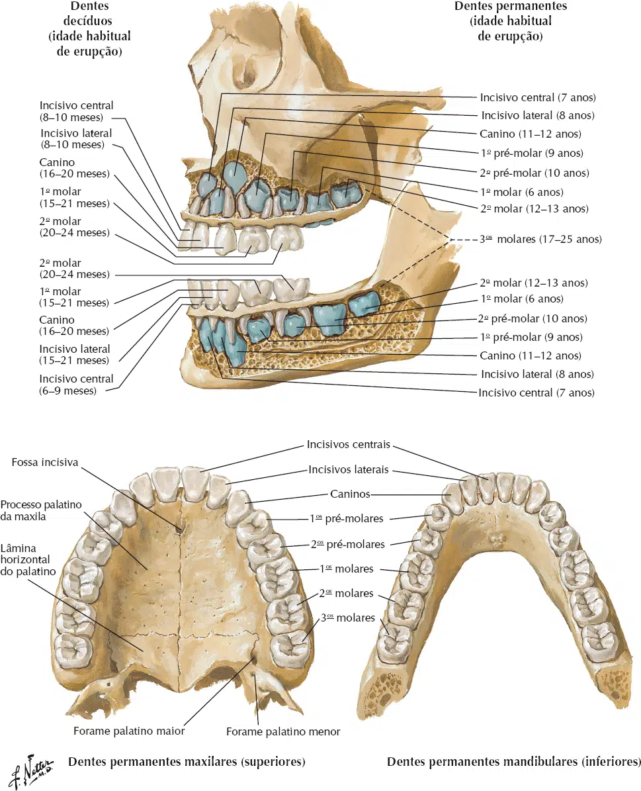
faringe
A parte nasal da faringe é estudada em conexão com o sistema respiratório.
A parte bucal da faringe comunica-se com a cavidade bucal propriamente dita através do istmo das fauces já definido, e a parte laríngea comunica-se anteriormente com o adito da laringe e, posteriormente, é continuada pelo esôfago.
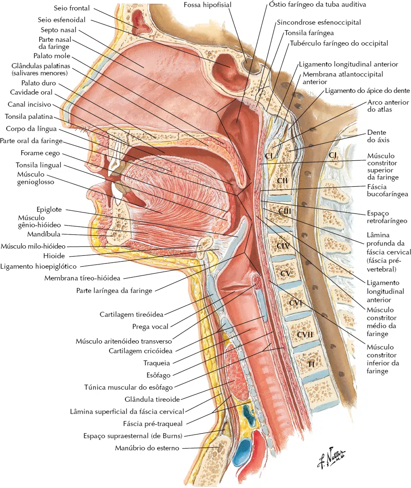
A musculatura da faringe é estriada.
Na deglutição, o palato mole é elevado, bloqueando a continuidade entre a parte nasal da faringe e o restante deste tubo muscular.
Deste modo o alimento é impedido de passar à nasofaringe e, eventualmente, de penetrar na cavidade nasal.
Por outro lado a cartilagem epiglótica fecha o adito da laringe, evitando que o alimento penetre no trato respiratório.
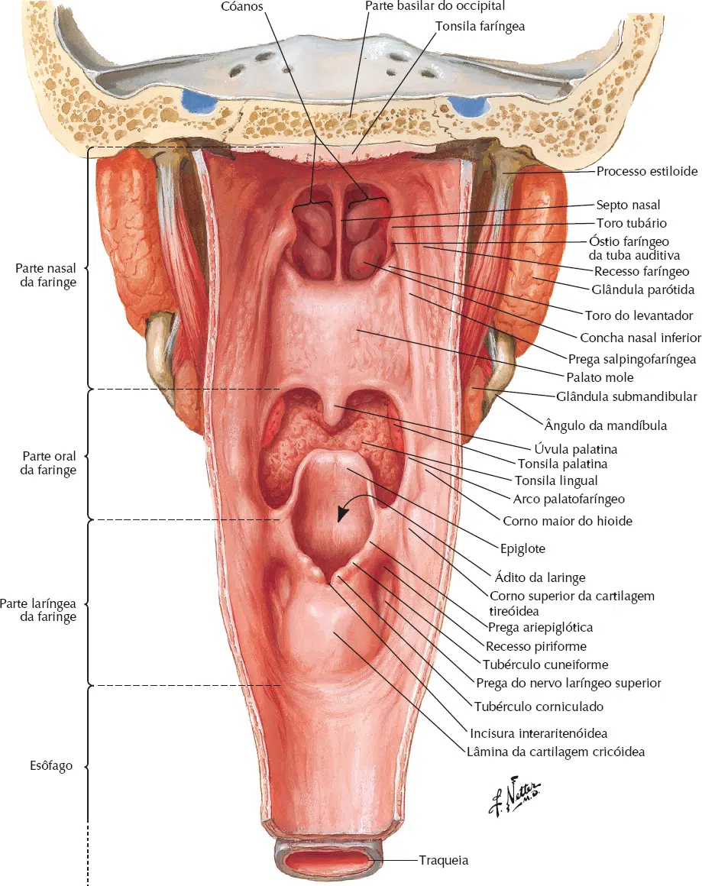
Esôfago
É um tubo muscular que conecta a faringe ao estômago.
Pode-se distinguir três porções no esôfago:
Cervical;
Torácica (a maior delas);
e Abdominal.
No tórax, o esôfago situa-se ventralmente à coluna vertebral e dorsalmente a traquéia, estando próximo da aorta.
Para atingir o abdome ele atravessa o músculo diafragma e, quase imediatamente, desemboca no estômago.
A luz do esôfago, aumenta durante a passagem do bolo alimentar, o qual é impulsionado por contrações da musculatura de sua parede.
Estes movimentos, que são próprios de todo restante do canal alimentar, são denominados peristálticos, e à capacidade de realizá-los dá-se o nome de peristaltismo.
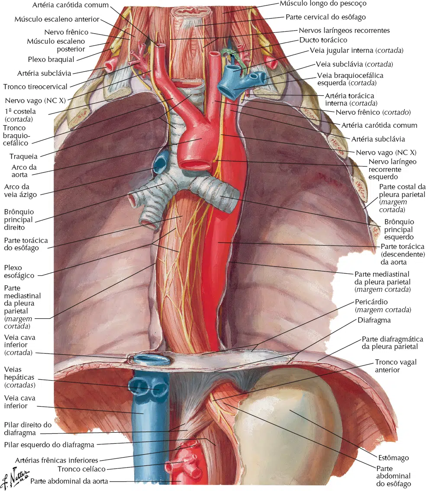
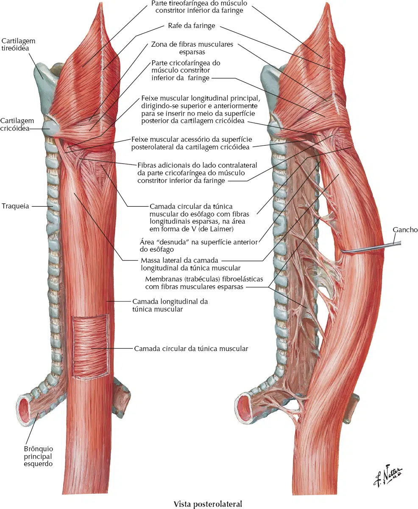
Músculo diafragma
O abdome está separado do tórax, internamente, por um septo muscular, o m. diafragma, disposto em cúpula de concavidade inferior.
O m. diafragma apresenta uma parte tendínea, o centro tendíneo, e outra carnosa, periférica, que se prende às 6 últimas costelas, extremidade caudal do esterno e à coluna vertebral.
A a. aorta, a v. cava inferior e o esôfago atravessam o diafragma passando pelo hiato aórtico, forame da veia cava e hiato esofágico, respectivamente.
O músculo diafragma exerce importante função na mecânica respiratória.

Peritônio
Os órgãos abdominais são também revestidos por uma membrana serosa em maior ou menor extensão, o peritônio, que apresenta duas lâminas:
O peritônio parietal reveste as paredes da cavidade abdominal;
E o peritônio visceral envolve as vísceras.
As duas lâminas são continuas, permanecendo entre elas uma cavidade virtual, a cavidade peritoneal, que contém pequena quantidade de líquido.
Alguns órgãos abdominais situam-se junto da parede posterior do abdome e, nestes casos, o peritônio parietal é anterior a eles: diz-se que essas vísceras são retroperitoneais; exemplos: rins e pâncreas.
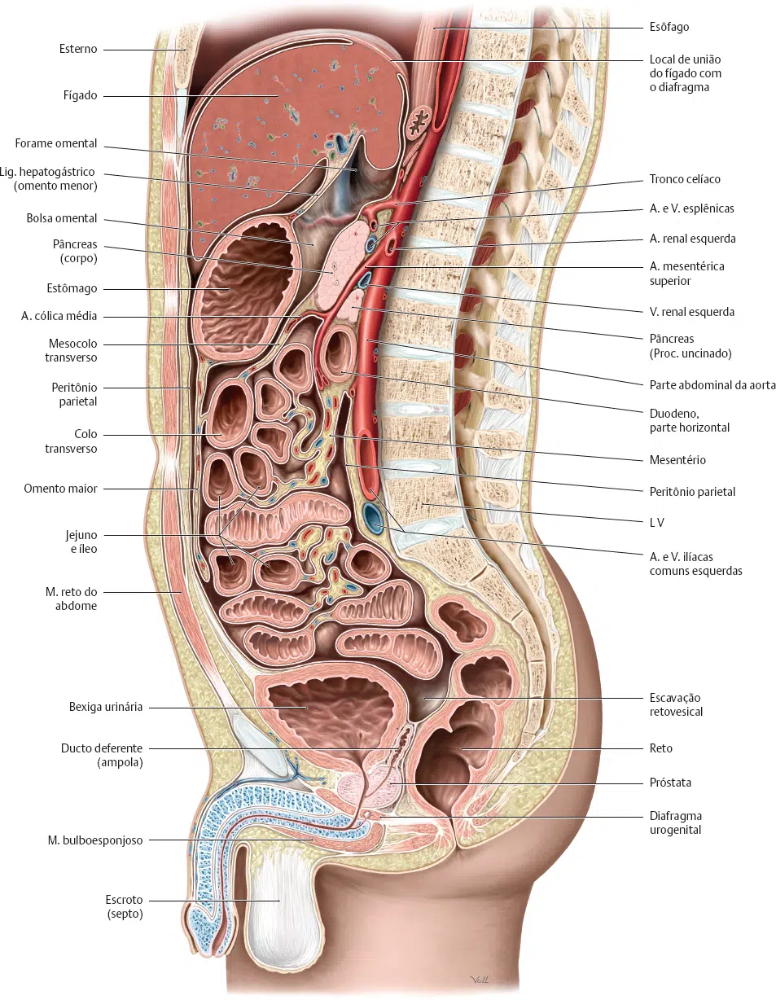
É evidente que as vísceras que ocupam posição retroperitoneal são fixas.
Muitas outras, entretanto, salientam-se na cavidade abdominal, destacando-se da parede e do peritônio que as reveste, as acompanha, de modo que entre o órgão e a parede, forma-se uma lâmina peritoneal denominada meso (mesocólon ou mesentério) ou ligamento.
Outras vezes, estas pregas se estendem entre dois órgãos e recebem o nome de omento.
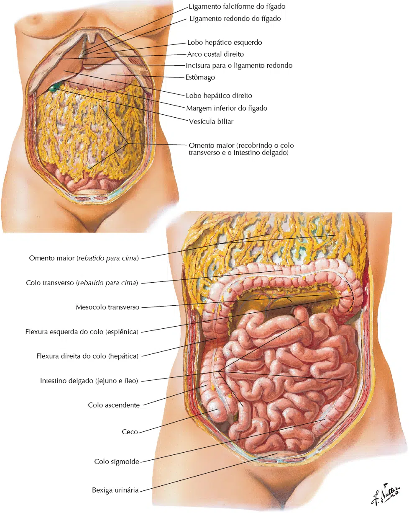
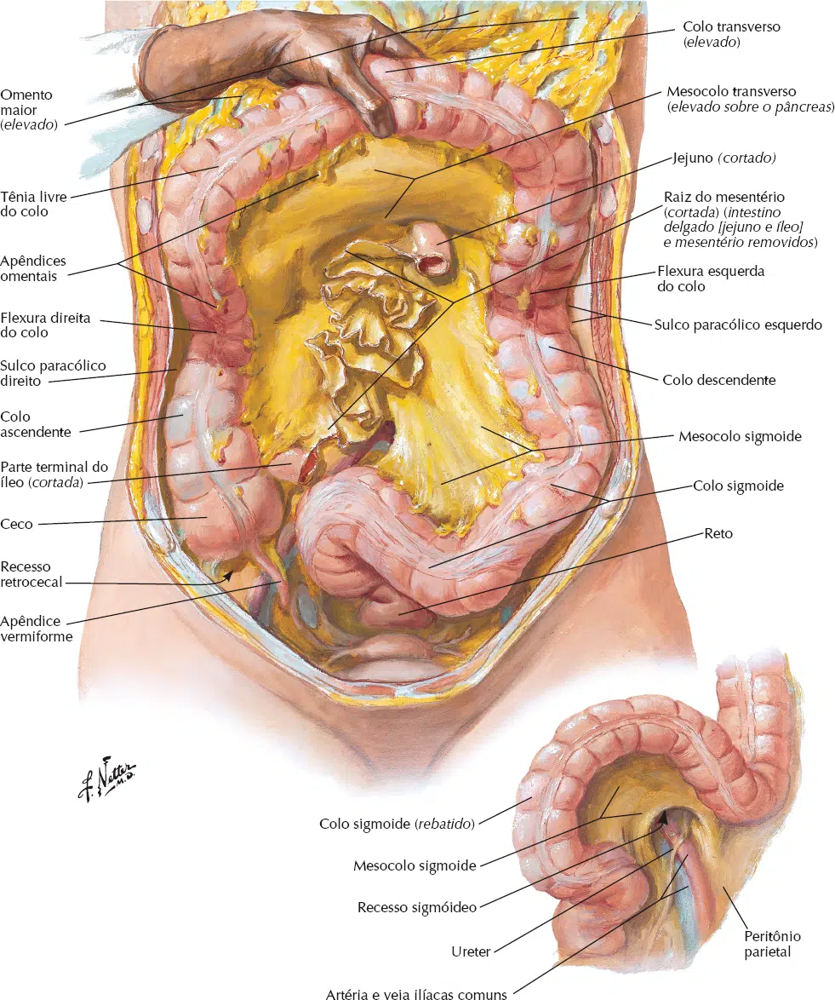
Estômago
É uma dilatação do canal alimentar que se segue ao esôfago e se continua no intestino.
Está situado logo abaixo do m. diafragma, com sua maior porção à esquerda do plano mediano.
Apresenta dois orifícios: um proximal, de comunicação com o esôfago, o óstio cárdico, e outro distal, o óstio pilórico, que se comunica com a porção inicial do intestino delgado, o duodeno.
Neste nível ocorre uma condensação de feixes musculares longitudinais e circulares que constituem um mecanismo de abertura e fechamento do óstio para regular o trânsito do bolo alimentar.
Este dispositivo semelhante é também encontrado ao nível do óstio cardíaco, sendo responsável pela abertura e fechamento ativos da comunicação esofagogástrica.
A forma e a posição do estômago variam de acordo com a idade, tipo constitucional, tipo de alimentação, posição do indivíduo e o estado fisiológico do órgão.
As duas margens do estômago são denominadas curvaturas maior à esquerda e a menor à direita.
A mucosa do estômago apresenta numerosas pregas de direção predominantemente longitudinal que desaparecem com a distensão do órgão.
O estômago é continuado pelo intestino delgado e este pelo intestino grosso; essas denominações são devidas ao calibre que apresenta.

Descrevem-se no estômago as seguintes partes:
A) Parte cárdica (cárdia): corresponde à junção com o esôfago;
B) Fundo: situada superiormente a um plano horizontal que tangencia a junção esôfago gástrica;
C) Corpo: corresponde à maior parte do órgão;
D) Parte pilórica: porção terminal, continuada pelo duodeno.
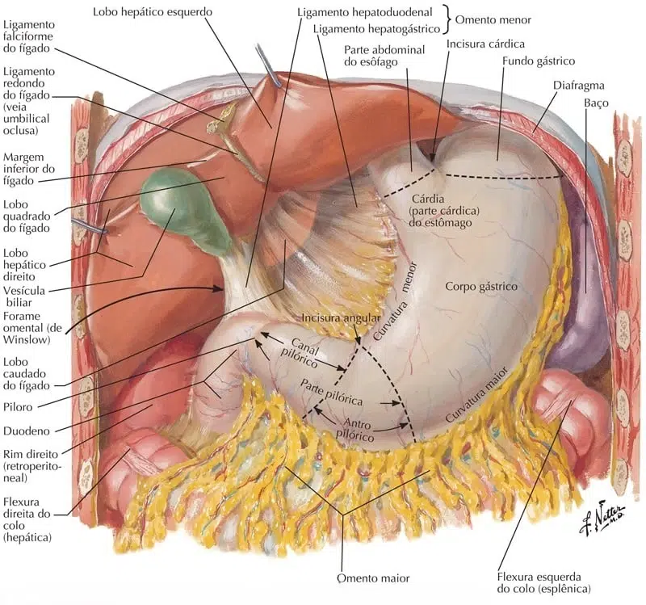
Intestino delgado
Subdivide-se em três seguimentos:
Duodeno;
Jejuno;
E íleo.
O duodeno inicia-se no óstio pilórico e termina ao nível de brusca angulação, a flexura duodenojejunal.
Possui 4 partes:
1ª – Parte superior / 1ª porção
2ª – Parte descendente / 2ª porção
3ª – Parte transversa ou horizontal / 3ª porção
4ª – Parte ascendente / 4ª porção
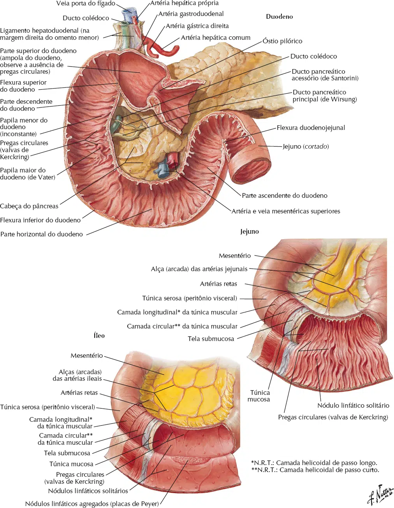
O órgão é quase todo retroperitoneal colado à parede posterior do abdome e apresenta forma de um arco em forma de “C“, que “abraça” a cabeça do pâncreas.
No duodeno desembocam o ducto colédoco (que traz a bile) e o pancreático (que traz a secreção pancreática).
A vesícula biliar é um órgão muscular responsável pelo armazenamento da bile e está presente na maioria dos vertebrados.
No ser humano é um saco membranoso no formato de pêra, que se situa abaixo da superfície do lóbulo direito do fígado, logo atrás das costelas inferiores.
Sua anatomia é dividida em:
Fundo, corpo, infundíbulo e colo.
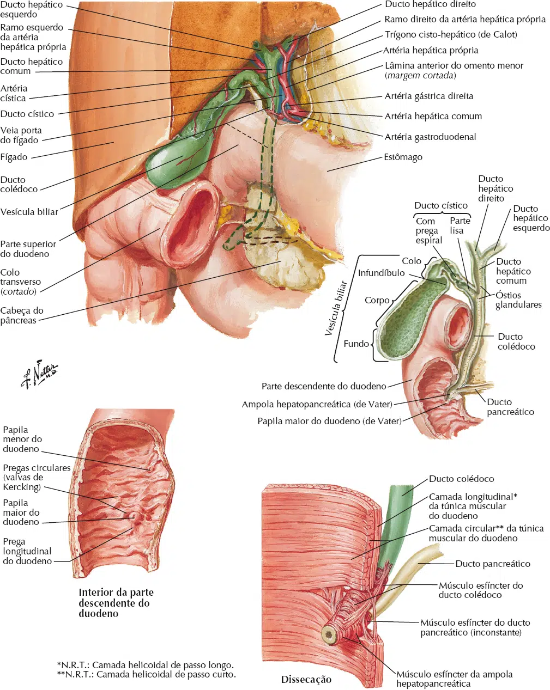
O jejuno por não ter limite nítido na sua continuação com o íleo, pode ser descrito em conjunto com este.
O jejuno-íleo constitui a porção móvel do intestino delgado, iniciando-se na flexura duodeno-jejunal e terminando no início do intestino grosso onde se abre pelo óstio ileocecal ao nível da junção íleo-ceco-cólica.
O jejuno-íleo apresenta numerosas alças intestinais e esta preso à parede posterior do abdome por uma prega peritoneal ampla, o mesentério.
A mucosa do intestino delgado apresenta inúmeras pregas circulares que se salientam na luz intestinal e aumentas a superfície interna da víscera.
No interior deste órgão é possível notar as microvilosidades, pequenas estruturas com capilares sanguíneos no seu interior que tem a função de absorver os nutrientes; o transito do quimo no jejuno é rápido, já no íleo é mais lento.
Intestino grosso
É o local de absorção de água, tanto a ingerida quanto a das secreções digestivas.
Uma pessoa bebe cerca de 1,5 litros de líquidos por dia, que se une a 8 ou 9 litros de água das secreções.
Glândulas da mucosa do intestino grosso secretam muco, que lubrificam as fezes, facilitando seu trânsito e eliminação pelo ânus.
Mede cerca de 1,5 m de comprimento e divide-se em:
Ceco – Primeira e mais dilatada das porções, conecta-se com o íleo através da válvula ileocecal. No ceco está localizado o apêndice vermiforme.
Colo ascendente – Estende-se do ceco até a flexura direita do colo, próxima ao fígado.
Colo transverso – Estende-se da flexura direita do colo, atravessa o abdome para o lado esquerdo e termina próximo ao baço, na flexura esquerda do colo.
Colo descendente – Esta porção encontra-se do lado esquerdo da cavidade abdominal e estende-se até o meio desta cavidade.
Colo sigmóide – em forma da letra “S” o colo sigmóide é a parte do intestino grosso onde ficam depositadas as fezes.
Reto – pequena parte final do intestino grosso onde se encontra as pregas transversas do reto.
Canal anal – ultima parte do intestino delgado, no final do reto e no canal anal encontramos o m. esfíncter do ânus.
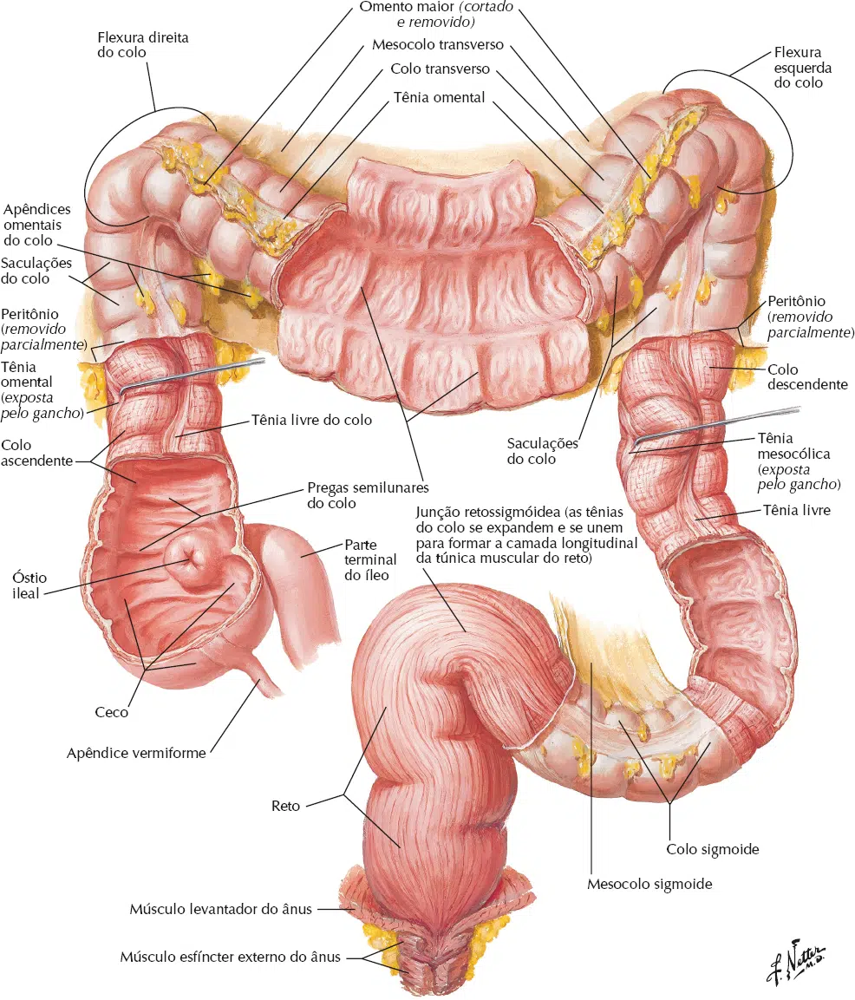
A saída do canal anal chama-se ânus e é fechada por um músculo que o rodeia, o esfíncter anal.
Numerosas bactérias vivem em mutualismo no intestino grosso.
Seu trabalho consiste em dissolver os restos alimentícios não assimiláveis, reforçar o movimento intestinal e proteger o organismo contra bactérias estranhas, geradoras de enfermidades.
As fibras vegetais, principalmente a celulose, não são digeridas nem absorvidas, contribuindo com porcentagem significativa da massa fecal.
Como retém água, sua presença torna as fezes macias e fáceis de serem eliminadas.
O intestino grosso não possui vilosidades nem secreta sucos digestivos, normalmente só absorve água, em quantidade bastante considerável.
Como o intestino grosso absorve muita água, o conteúdo intestinal se condensa até formar detritos inúteis, que são evacuados.
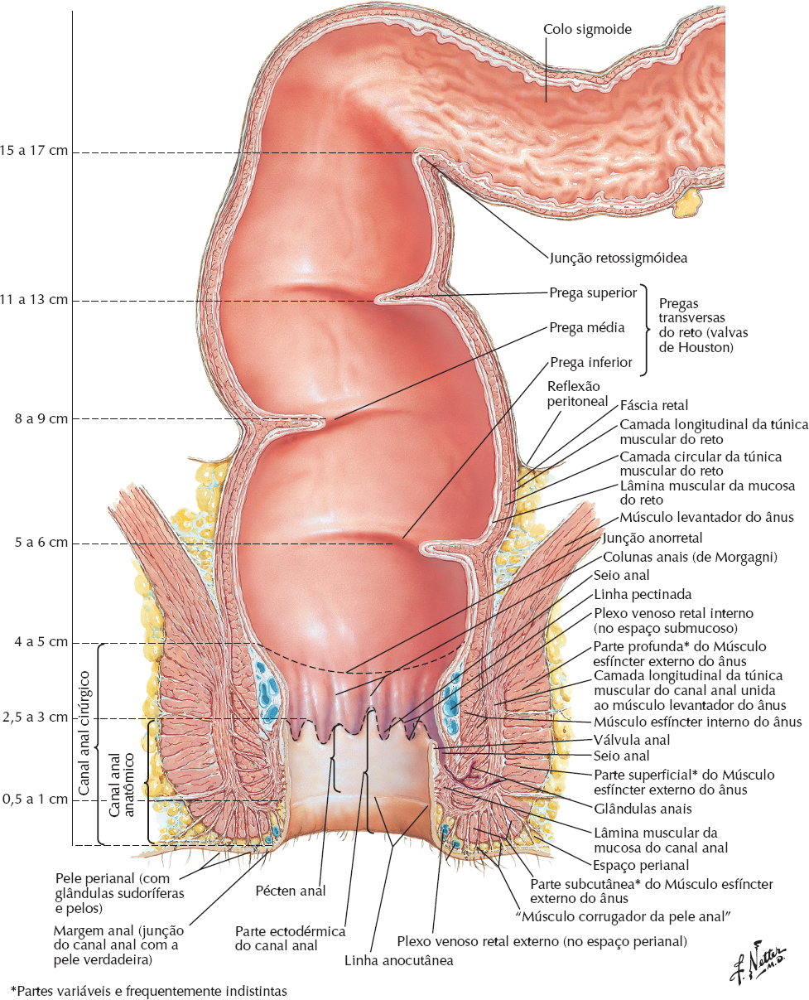
Glândulas anexas
Fígado
Este órgão é conhecido como a grande “farmácia” do corpo humano, pois tem o poder de metabolizar uma grande quantidade de substâncias do nosso organismo.
Porém, para o sistema digestório o fígado tem a função de produzir e liberar a bile, que funciona como um carreador de moléculas de gordura.
O fígado é a maior glândula do organismo, e é também a mais volumosa víscera abdominal.
Sua localização é na região superior do abdome, logo abaixo do diafragma, ficando mais a direita, isto é, normalmente 2/3 de seu volume estão a direita da linha mediana e 1/3 à esquerda.
O fígado apresenta duas faces:
Diafragmática e visceral.
A face diafragmática (ântero superior) é convexa e lisa relacionando-se com a cúpula diafragmática.
A face visceral (póstero inferior) é irregularmente côncava pela presença de impressões viscerais.
É dividido em lobos:
A face diafragmática apresenta um lobo direito e um lobo esquerdo, sendo o direito pelo menos duas vezes maior que o esquerdo.
A divisão dos lobos é estabelecida pelo ligamento falciforme.
Na extremidade desse ligamento encontramos um cordão fibroso resultante da obliteração da veia umbilical, conhecido como ligamento redondo do fígado.
A face visceral é subdividida em 4 lobos:
Direito e esquerdo (já citados) e quadrado e caudado.
Pela presença de depressões em sua área central, que no conjunto se compõem formando um “H”, com 2 ramos antero-posteriores e um transversal que os une.
Embora o lobo direito seja considerado por muitos anatomistas como incluindo o lobo quadrado (inferior) e o lobo caudado (posterior) com base na morfologia interna, os lobos quadrado e caudado pertencem mais apropriadamente ao lobo esquerdo.

O conhecimento dos segmentos hepáticos permite a realização de cirurgias hepáticas chamadas lobectomia, onde retira-se um segmento sem o prejuízo dos demais segmentos.
O fígado é dividido em oito segmentos contados em sentido horário.
Sendo que o número 1 corresponde ao lobo caudado e por isso não aparece em uma vista anterior da víscera.
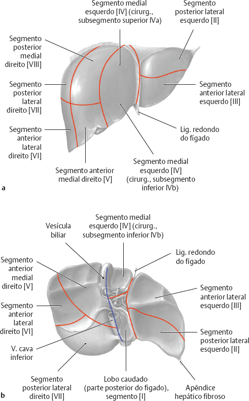
O segmento 1 como descrito anteriormente corresponde ao lobo caudado.
É atípico, pois ele possui uma irrigação e drenagem biliar exclusiva dele.
Os segmentos 2 e 3 correspondem ao lobo esquerdo, e se encontram a esquerda do ligamento falciforme.
O segmento 2 é lateral superior e o segmento 3 é o lateral inferior.
Ao lado da vesícula biliar, à sua esquerda, está o segmento 4, que é dividido em medial superior e inferior.
À direita da vesícula biliar está o segmento 5, também chamado de ântero-inferior.
O segmento 6 é o mais lateral, conhecido como póstero-inferior, encontra-se ao lado do segmento 5.
Superior ao segmento 6 está o segmento 7, que também é lateral e nomeado como póstero-superior.
Acima do segmento 5, entre o segmento 4 e 7, está o segmento 8, também chamado de ântero-superior.
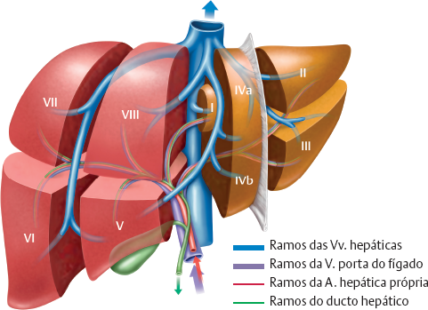
Pâncreas
O pâncreas é uma glândula de secreção mista, além da produção do suco pancreático, secreta um produto hormonal que é a insulina, a qual é encaminhada para a corrente sanguínea.
O pâncreas é achatado no sentido ântero-posterior, ele apresenta uma face anterior e outra posterior, com uma borda superior e inferior e sua localização é posterior ao estômago.
Suas dimensões giram em torno de 20 centímetros de comprimento e 5 centímetros de altura e dividi-se em:
cabeça (aloja-se na curvatura do duodeno), colo, corpo, cauda e processo uncinado (uma extensão posterior e inferior da cabeça do pâncreas, em forma de gancho, que se relaciona intimamente com os vasos mesentéricos superiores e estruturas retroperitoneais, desempenhando um papel crítico em procedimentos cirúrgicos e patologias pancreáticas).
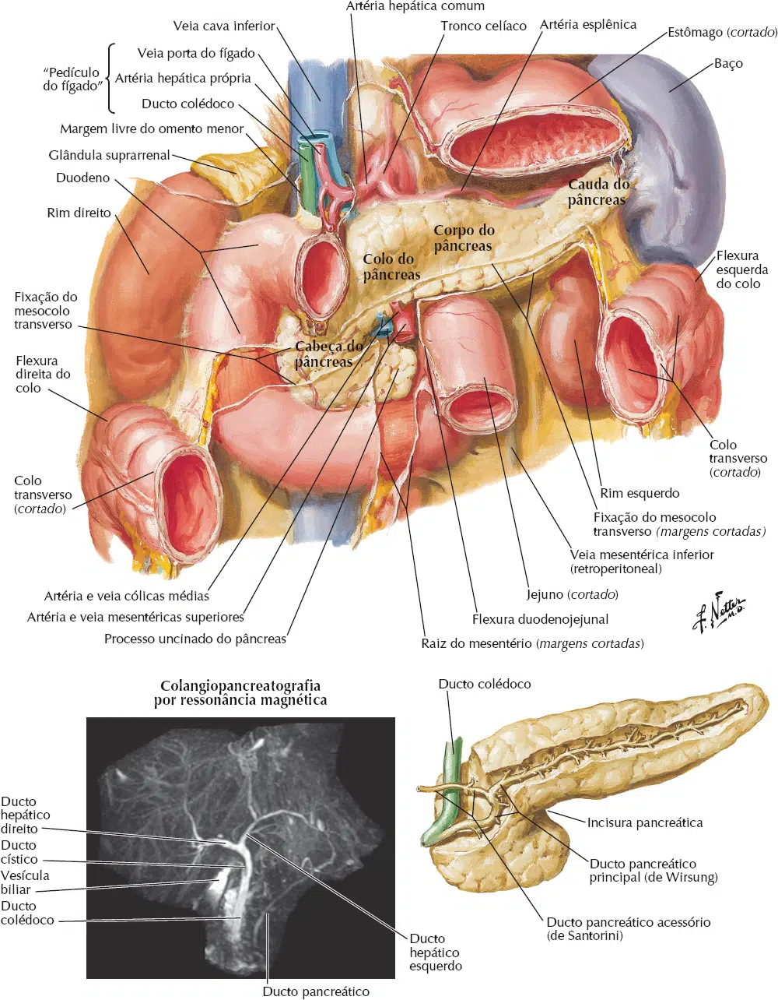
Glândulas salivares
As glândulas salivares são consideradas anexas do sistema digestório, mas por razões didáticas, dada às suas relações com a cavidade bucal, este é o momento de estudá-las.
São responsáveis pela secreção da saliva e apesar de numerosas, só nos interessam as chamadas extraparietais, que compreendem 3 pares de glândulas:
Parótidas;
Submandibulares;
E sublinguais.
A) Glândula parótida: está situada lateralmente a face e anteriormente ao pavilhão auditivo externo.
Seu canal excretor, o ducto parotídeo, abre-se no vestíbulo da boca, ao nível do segundo molar superior.
O processo infeccioso que se assesta na parótida (parótide) é conhecido com o nome de caxumba.
B) Glândula submandibular: localiza-se anteriormente à parte mais inferior da parótida, protegida pelo corpo da mandíbula.
C) Glândula sublingual: é a menor das três, situando-se lateral e inferiormente à língua, sob a mucosa que reveste o assoalho da boca.
Sua secreção é lançada na cavidade bucal, sob a porção mais anterior da língua, por canais que desembocam independentemente por uma série de orifícios no assoalho da cavidade da boca.
O ducto submandibular abre-se no assoalho da boca, abaixo da língua, próximo ao plano sagital mediano.
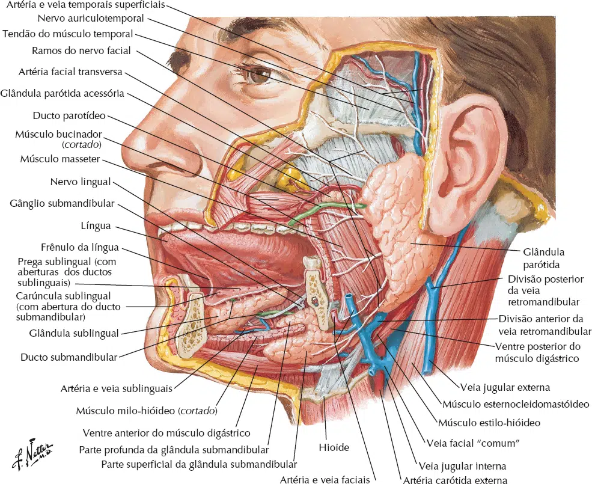